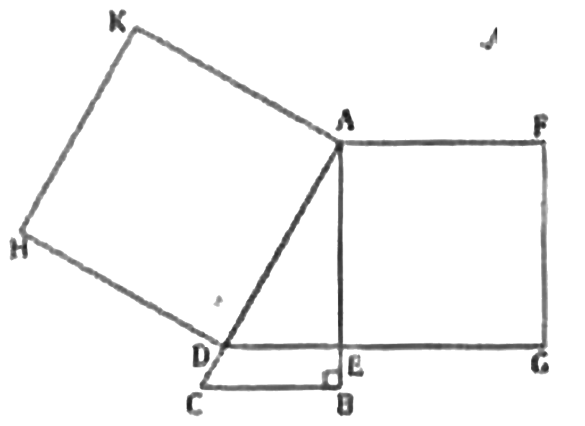
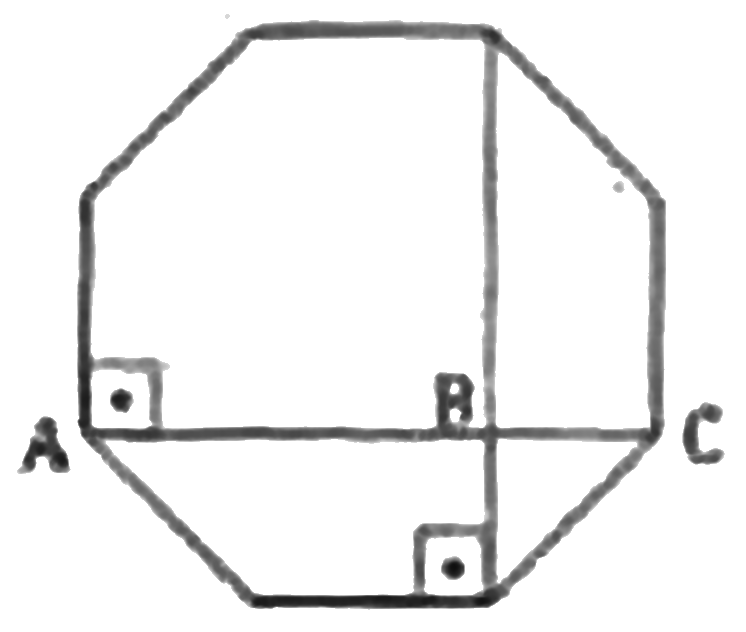

בסרטוט שלפניכם משולש ישר זווית ABC. ADHK ו־AFGE הם ריבועים. הנקודה D נמצאת על המשכה של הצלע EG. נתון: EB = 1 ס"מ, CD = 2 ס"מ, AF = 4 ס"מ.
על פי נתונים אלו ונתוני הסרטוט, מהו שטחו של הריבוע ADHK (בסמ"ר)?

מאיה עמדה לרכוש 7 פריטים בחנות בגדים במחיר ממוצע של 85 שקלים לפריט. אם מאיה תוותר על פריט שמחירו 70 שקלים ותבחר במקומו פריט שמחירו 105 שקלים, מה יהיה כעת המחיר הממוצע (בשקלים) לפריט בסל הקניות של מאיה?
לכל מספר שלם וחיובי n הגדול מ־6 הוגדרה הפעולה $ כך: מספר הזוויות המרכזיות הנוצרות במצולע משוכלל בעל n צלעות בעת חלוקתו למשולשים שווי שוקיים.
איזה מהביטויים הבאים מתאר נכונה את הפעולה $(n)?
נתון: ᵃ√3² · (⁴√3)ᵇ = 9⚠
a − b = ?

בסרטוט שלפניכם מתומן משוכלל.
על פי נתוני הסרטוט, מה מהבאים נכון בהכרח?
אוהד נכנס למעלית בקומה 20. עקב תקלה במעלית כל לחיצה על כפתור כלשהו גורמת לכך שהמעלית תרד או תעלה קומה אחת (באופן אקראי).
איזה מהבאים לא יכול להיות מספר קומה בה ירד אוהד מהמעלית לאחר 10 לחיצות על כפתור כלשהו?
נתון: (xa²−a+ab2 + ½)⁴x(a−1)² = x−b² , x ≠ 0, 1⚠
a = ?
נתון: |x| < |y|
מה מהבאים נכון בהכרח?
נתון: 0 < x
מה מהבאים נכון בהכרח?
⚠ עמודים 138–139 דילגו בסרטון: חסרות שאלה 10 של מקבץ 33 ושאלות 1–3 של מקבץ 34.